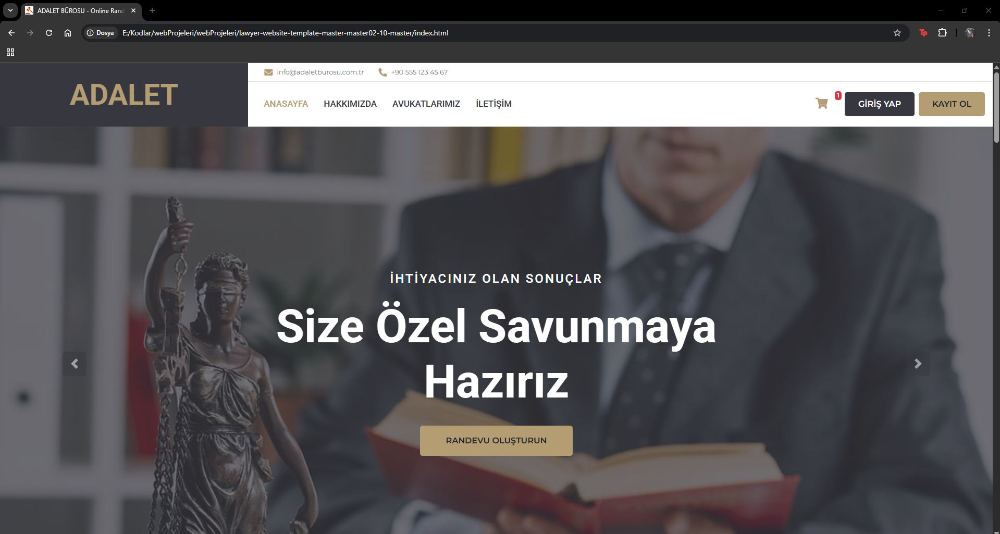
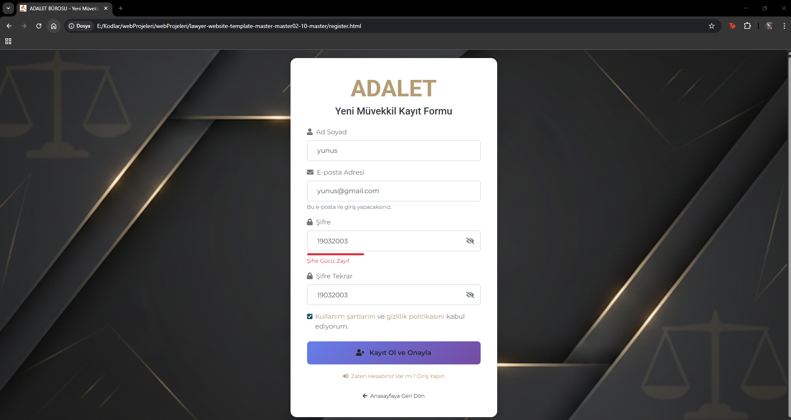
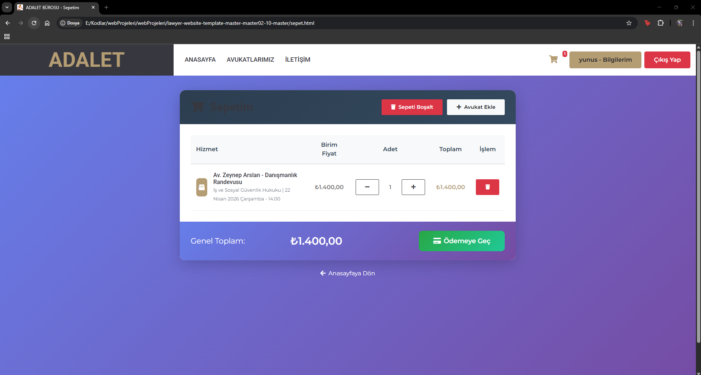
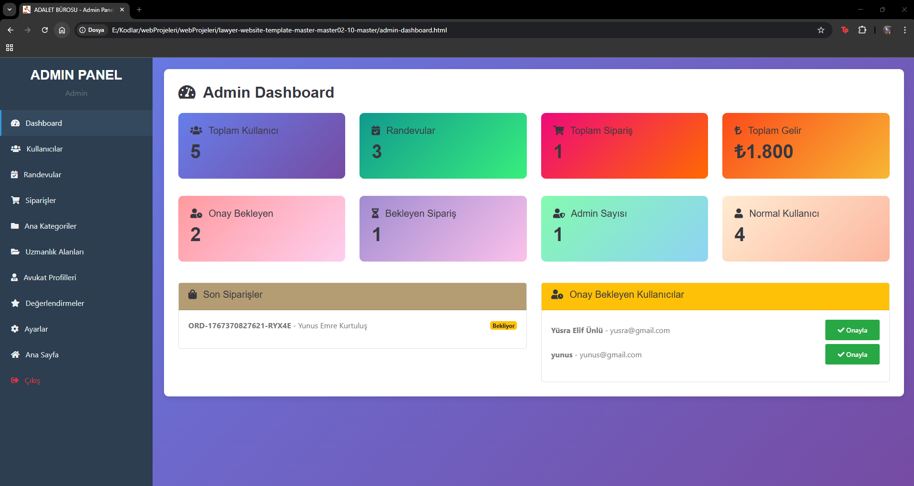
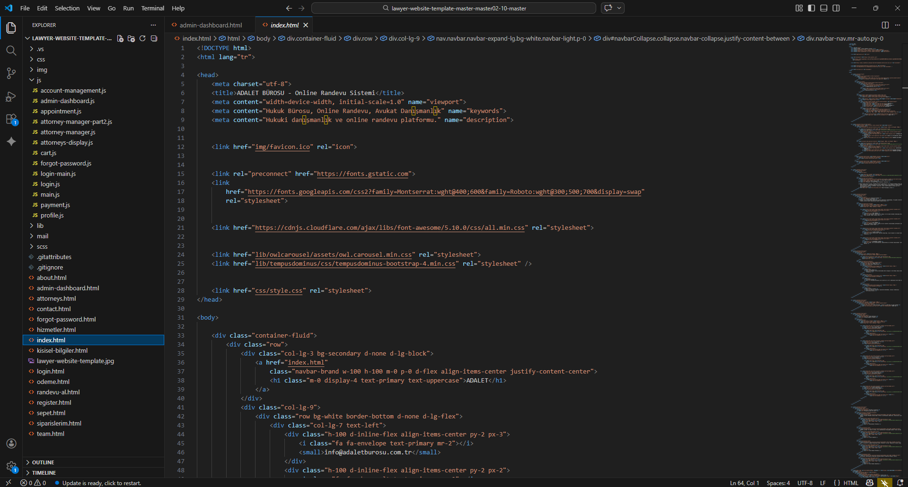

Yunus Emre Kurtuluş
Yazılım geliştirme, yapay zekâ ve modern web teknolojileri ile yenilikçi çözümler üreten bir bilgisayar mühendisi adayıyım. Projelerime ve sertifikalarıma göz atabilirsiniz.
Hakkımda
Merhaba! 👋
Ben Yunus Emre Kurtuluş. 2003 doğumluyum ve eğitimime Karabük Üniversitesi Bilgisayar Mühendisliği bölümünde devam ediyorum.
Yazılım dünyasında sürekli yeni şeyler öğrenmekten keyif alıyor; okulda üzerine çalıştığım algoritma, veritabanı ve yazılım geliştirme gibi teorik bilgileri sadece derste bırakmayıp pratiğe dökmeyi çok seviyorum. Bu amaçla boş zamanlarımda kendimi test etmek ve edindiğim bilgileri somutlaştırmak için web siteleri ve masaüstü uygulamaları gibi çeşitli kişisel projeler geliştiriyorum.
Projeler
Üzerinde çalıştığım bazı projeler. Her biri farklı bir problemi çözmeye odaklanıyor.






Adalet Hukuk Bürosu ve Randevu Sistemi
Bu Proje Ne İşe Yarar?
Müvekkillerin sisteme kayıt olarak ihtiyaç duydukları uzmanlık alanındaki avukatları bulabileceği, sepete ekleyerek online danışmanlık randevusu oluşturabileceği tam kapsamlı bir platform. Aynı zamanda yöneticilerin; kullanıcı onaylarını, randevuları, siparişleri ve toplam gelirleri tek bir ekrandan kolayca yönetebilmesini sağlar.
Hangi Teknolojileri Kullandım?
Merkezi Yönetim ve Analiz Sistemi
Bu Proje Ne İşe Yarar?
Şirket çalışanlarının kayıtlarını tutmak, onlara projeler atamak ve şirket verilerini detaylı grafiklerle analiz etmek için geliştirilmiş kapsamlı bir masaüstü programı. İçerisinde yetki tabanlı giriş sistemi, insan kaynakları istatistikleri (yaş, cinsiyet, şehir dağılımları) ve muhasebe takibi gibi gelişmiş bölümler barındırıyor.
Hangi Teknolojileri Kullandım?
Güvenli Ağ İletişimi ve Hata Tespit Sistemi
Bu Proje Ne İşe Yarar?
Bir bilgisayardan diğerine gönderilen mesajların yolda (ağ üzerinde) bozulup bozulmadığını veya araya giren biri tarafından değiştirilip değiştirilmediğini anlayan bir güvenlik simülasyonu. Mesajlara özel matematiksel kontroller (Parity, Checksum, CRC) ekleyerek verinin karşı tarafa hatasız ulaştığından emin olmayı sağlar.
Hangi Teknolojileri Kullandım?
Sertifikalar
Sürekli öğrenme yolculuğumda kazandığım sertifikalar ve başarılar.

Frontend NextJS
Kurum Adı: Fibabanka Akademi

Microsoft SQL Server Database Management
Kurum Adı: Fibabanka Akademi
 Teknolojisi.jpg)
Yapay Zeka (AI) Teknolojisi
Kurum Adı: Fibabanka Akademi

Programlama Araçları: Git & GitHub
Kurum Adı: Fibabanka Akademi

JavaScript: JSON, AJAX ve WebApi
Kurum Adı: Fibabanka Akademi

Programlama ve Algoritma: Console Programming
Kurum Adı: Fibabanka Akademi


.jpg)
.jpg)